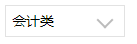

1 .icon-right, .icon-down, .icon-up {
2 display: inline-block;
3 padding-right: 13rpx;
4 position: absolute;
5 /*组件内调整箭头的位置*/
6 right: 20rpx;
7 top: 10rpx;
8 }
9
10 .icon-right::after, .icon-down::after, .icon-up::after {
11 content: "";
12 display: inline-block;
13 position: relative;
14 bottom: 2rpx;
15 margin-left: 10rpx;
16 height: 10px;
17 width: 10px;
18 border: solid #bbb;/*上下箭头的颜色*/
19 border-width: 2px 2px 0 0;/*上下箭头的粗细*/
20 }
21
22 .icon-right::after {
23 -webkit-transform: rotate(45deg);
24 transform: rotate(45deg);
25 }
26
27 .icon-down::after {
28 bottom: 14rpx;/*旋转后需要上移*/
29 -webkit-transform: rotate(135deg);
30 transform: rotate(135deg);
31 }
32
33 .icon-up::after {
34 bottom: 0rpx;
35 -webkit-transform: rotate(-45deg);
36 transform: rotate(-45deg);
37 }效果：
